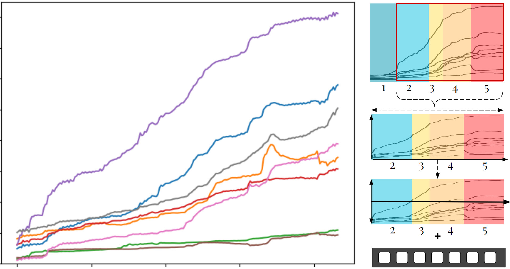

Make it Happier! Discretizing and Amplifying Happiness in Animated Faces
Jessica Bo and Zixin Zhao
CSC2521 Course Project
CSC2521 Course Project
Video 1: Overview and demonstration of the emotion amplification pipeline and results.
1. Introduction
Modelling human expression within facial animation is a complex task as it involves the interplay between many facial muscles. The Facial Action Coding System (FACS) (Ekman & Friesen, 1978) is a popular tool for encoding facial movements based on the musculoskeletal system via action units (AUs). It offers a systematic approach to model emotions on human faces. Despite the advances in automated facial animation, there is still a reliance on human actors and animators to create realistic, emotive expressions on animated faces.
Yu et al. (2012) validate the FACS-driven synthesis of six emotions (happy, sad, angry, disgust, surprise, and fear) at three levels of intensity. However, emotions are often expressed nonlinearly, so using equally spaced apart emotions may not capture the different discrete, granular levels of emotion expression nor the dynamic progression of emotion. Thus, we want to explore how realistic expressions captured by real people can be used to determine different intensities of emotions, which can be applied to control emotion expression in animated models artificially. We focus on happiness as it is an easily expressed and recognizable emotion. Our project aims to address two main research questions:
- Can we define the quantifiable levels of happiness that are recognizable on animation models?
- Can we create fine-tuned controls for artificially amplifying and dampening happiness on animation models to desired levels?
2. Related Works
2.1. Systematic Mapping of Human Expressions using FACS
Two popular emotion description methods are FACS and continuous models using affect dimensions. FACS encodes facial movement based on facial muscles and can reliably model spontaneous emotions (Sayette et al., 2001). Additionally, prior works like Parke and Waters (1996) have been conducted to determine which action units (AU) are correlated to the expression of the six basic emotions. A summary of the results can be seen in Table 1. Using the AU mappings, Spencer-Smith et al. (2001) explored creating a three-dimensional parameterized facial expression model. There have also been works in the automatic identification of facial expressions using FACS, with early models using hidden Markov models (Lien et al., 1998) and more recent ones using support vector machines (SVM) and convolutional neural networks (CNN) (Li et al., 2022).
Table 1: Action units associated with each of the 6 basic emotions (Parke & Waters, 1996)
2.2. Quantifying and Generation Emotions
Within psychophysics, Marneweck et al. (2013) conducted studies to examine the threshold for distinguishing between different intensities for four basic emotions: anger, disgust, happiness, and sadness. They morph images of actors from neutral to maximum emotion at granular increments and test participants on perceivable differences. They found that participants can recognize 10-15% differences in emotion intensity, with happiness requiring the least difference and sadness requiring the most. We follow a similar experimental method for our perceptual tests.
Yu et al. (2012) determined the activated AUs for each emotion through a human perceptual experiment and were able to synthesize facial expressions on 3D models without the use of human actors. They show that the activations of each AU occur at different times and have nonlinear progression curves. They validated their AU selection by generating three equally spaced intensity levels for each emotion. Study participants could determine the higher intensity expression in pairwise images with 95.4% accuracy. We draw inspiration for our technical implementation from their perceptual-driven methods.
Amaya et al. (1996) explored applying "emotion transforms" concerning speed and range of movement to generate emotions in animation models. They augment the primary body movements with an extracted emotional curve as a mask to transform the phase and amplitude of the original movement. We draw inspiration from their methods of extracting an "emotion curve" to apply to a neutral facial animation.
Yu et al. (2012) determined the activated AUs for each emotion through a human perceptual experiment and were able to synthesize facial expressions on 3D models without the use of human actors. They show that the activations of each AU occur at different times and have nonlinear progression curves. They validated their AU selection by generating three equally spaced intensity levels for each emotion. Study participants could determine the higher intensity expression in pairwise images with 95.4% accuracy. We draw inspiration for our technical implementation from their perceptual-driven methods.
Amaya et al. (1996) explored applying "emotion transforms" concerning speed and range of movement to generate emotions in animation models. They augment the primary body movements with an extracted emotional curve as a mask to transform the phase and amplitude of the original movement. We draw inspiration from their methods of extracting an "emotion curve" to apply to a neutral facial animation.
2.3. Realism in Animated Faces
As we are working with amplification of emotions on human faces, we have to be aware of the level of exaggeration to avoid the uncanny valley. In general, less realistic faces require more exaggeration to reach the same emotional intensity as a realistic human face (Mäkäräinen et al., 2014). When comparing perceived realism and eeriness of animated faces, shape is the dominant factor for rating realism and expression intensity (Zell et al., 2015). Furthermore, realism in terms of skin texture maps, stylization, shading, lighting, and texture is not always preferred and is not a good predictor for animation appeal (Zell et al., 2014). There are also different portions of the face that humans tend to use to determine the emotion of animated faces; for instance, for happiness, the most important features in descending order are mouth, eyebrows, and eyes (Zhang et al., 2021). Moreover, when comparing the expression intensity of the animated faces, the more intense happy faces were often perceived as less happy overall (Zhang et al., 2021).
3. User Study: Recording Emotions and Speech
For this project, we use existing facial mapping technology (Apple's ARKit), as facial landmark detection is a nontrivial task. Prior works (Sayette et al., 2001; Spencer-Smith et al., 2001; Yu et al., 2013) have performed perceptual studies to determine which AU activation induces the perception of each basic emotion. While the literature identifies relevant AUs to target, they do not specify the value for activation or define each AUs' temporal progression path. While there are some FACS curves shown in Yu et al. (2013), there does not seem to be a standard curve for "happiness" (see Appendix A.1. for our attempt to manually generate happy expressions). Therefore, our first step is to collect a dataset of dynamic expressions of happiness recorded with a group of human participants. In the next stage, we apply the data to control the level of happiness in animated models.
While ARKit recordings' output is a CSV of blendshape activations corresponding to their proprietary model, they generally map directly to an AU of the FACS system, so we will refer to the blendshapes as AUs for simplicity. We use Melinda Ozel's open source ARKit to FACS cheat sheet as a mapping guideline.
While ARKit recordings' output is a CSV of blendshape activations corresponding to their proprietary model, they generally map directly to an AU of the FACS system, so we will refer to the blendshapes as AUs for simplicity. We use Melinda Ozel's open source ARKit to FACS cheat sheet as a mapping guideline.
3.1. Pilot Recording Study
As a pilot precursor to our full-scale user study, we manually analyze the recording of a research team member (Zixin) performing a gradual smiling motion. Using the generated FACS curves, we found key points related to the different quantifiable levels of happiness; each level had varying durations. Each section was approximately identified using our judgment aided by Chris Landreth's slides (Landreth, 2023). We observed nonlinear activations of different AUs, with MouthSmile (AU 12) activating significantly ahead of other AUs. The AUs relevant to expressing happiness are identified through their activation and plotted in Figure 1, alongside with the five salient stages of happiness.

Neutral - Slight Smile - Smile - Genuine Smile - Laughter
Figure 1: The stages of smiling and the associated FACS curves. Discretized levels are Neutral, Slight Smile, Smile, Genuine Smile, and Laughter.
3.2. Full Recording Study Protocol
For the full recording study, we gathered eight participants (N=8) of mixed gender. Our data collection study consisted of three steps:
- Semi-structured interview with the participant about different ways happiness can be expressed
- Record the participant transitioning from neutral to full happiness.
- Record the participant saying the sentence "I had such a good day today", once in a neutral tone/expression and once with a happy tone/expression.
3.3. Interview Results
We conducted our study in various settings. However, the same questions were asked to each participant, and the order was unchanged. From the interview, we found that people identify four expressions that make up different happiness: small smile, cheeks puffed smile, eyes crinkle smile, and laughing with teeth. The results align with our observations from the pilot study. In addition to facial expressions, participants brought up nuances of expressing emotions that cannot be captured by face alone, such as conflicting body language and facial expressions as well as body movements as an extension of expression emotions.
3.4. Emotion Recording Results
We show a sample of what the recording results looked like. Figure 2 shows P1's happiness expression video (displayed with permission) and the ARKit's AUs animated on the Apple Face.
Figure 2: Sample recording from our recording study of a participant going from a neutral face to full smile
3.5. Emotion Level Discretization
Using the previously identified AUs for happiness from the pilot study, we extracted each participant's recorded blendshape weights to determine a generalized a happiness FACS curve. The curves are all resampled to the same length and start activation time so that we can approximate a mean curve for all identified happiness AUs, as shown in Figure 3. See the original raw signals in the Appendix A.2.

Since we did not know the importance of each AU for the expression of happiness, we used principal component analysis (PCA) to determine the features that correlate to expressing happiness. PCA shows that reducing the components to two dimensions captures 99.7% of the data feature variances in our data. Through feature analysis of each component (details shown in Table 2, where the first component captures 97.8% of the variation and the second captures 1.9%), we show that the most important features in descending order are MouthSmile (AU 12), CheekSquint (AU 6), and MouthUpperUp (AU 10).


Figure 3: Aligned FACS curves of the happy AUs of all recording study participants with the mean curves for each AU shown in orange.
There are variations in how each participant's AUs were activated, but the general trend is consistent. The AUs with the most significant differences between participants are EyeSquint (AU 7), MouthDimple (AU 14), and NoseSneer (AU 9). There is one clear outlier for the MouthDimple (P6), which may be part of a personal quirk.
Since we did not know the importance of each AU for the expression of happiness, we used principal component analysis (PCA) to determine the features that correlate to expressing happiness. PCA shows that reducing the components to two dimensions captures 99.7% of the data feature variances in our data. Through feature analysis of each component (details shown in Table 2, where the first component captures 97.8% of the variation and the second captures 1.9%), we show that the most important features in descending order are MouthSmile (AU 12), CheekSquint (AU 6), and MouthUpperUp (AU 10).
Table 2: Two main component obtained from PCA and their correlation to the main happiness AUs.
After combining all the mean AUs, we get the graph in Figure 4 shown below.
Figure 4: FACS curves of the mean of happiness AUs obtained from our recording study.
Using the calculated mean AU values, we group them into different intensity levels. After visually identifying that there could be between 4 and 6 discrete levels, we used K-Means clustering with K=4,5,6 and mapped it to the mean curves to inspect the cut-off for each level. From the graphs below, we found that K=5 captured the different segments of the curves and grouped them into levels that best balanced granularity and recognizability. When K=4, some AUs are activated in the neutral range, while K=6 discretizes the levels into too many, making it hard to distinguish one from another. In Figure 5, the blue sections represent the start of a smile, the yellow-orange section represents a smile, and the red corresponds to an open mouth laughing.
Figure 5: Mean curves with different colouring for clusters detected through K-Means clustering, where blue is neutral, yellow/orange is visible smiling, and red is a high intensity smile.
To answer our first research question on the levels of happiness, Table 3contains the levels and approximate temporal ranges of the mean AU curve projected on the Apple Face and ValleyGirl models (see Appendix A.3. for how we mapped ARKit blendshapes to ValleyGirl controls). Through the recording study and K-Means clustering, we determined five distinguishable levels of happiness ranging from neutral to laughter and estimated the average percentage duration of each level. Additionally, we can confirm that the expression of happiness is nonlinear, and the duration between each level is not of equal duration.
Table 3: Levels of happiness and duration ranges (%) obtained through K-Means clustering.
4. Implementation: Amplifying Emotions Methods
We introduce two methods of dynamically controlling happiness amplification and dampening in an animated model. While both methods are derived from the data collected from the user study, one achieves it through linear interpolation, and the other uses the real mean AU curves to mimic natural nonlinearities.
See Appendix A.3. for an even more basic version of amplification, where the emotion level is modified to a static level without dynamic changes.
See Appendix A.3. for an even more basic version of amplification, where the emotion level is modified to a static level without dynamic changes.
4.1. Naive Linear Amplification
The naive linear method takes inspiration from Amaya et al. (1996), where we apply a mask of AU curves like the one seen in the image below to an input user-recorded video to artificially simulate a gradual progression of happiness. This method involves extracting the desired start and end intensity levels from the Mean AU curves and then linearly interpolating the points in between to match the length of the original video.
To compensate for videos with an existing baseline level of happiness, we normalize the mask by subtracting the AU activations of the existing level to prevent over-amplification or over-dampening. The baseline level is determined by projecting the average activation level of the MouthSmile AU (the most deterministic AU according to PCA) to find the closest activation in the mean AU curves and categorizing the level. The entire process is summarized in Figure 6.

To compensate for videos with an existing baseline level of happiness, we normalize the mask by subtracting the AU activations of the existing level to prevent over-amplification or over-dampening. The baseline level is determined by projecting the average activation level of the MouthSmile AU (the most deterministic AU according to PCA) to find the closest activation in the mean AU curves and categorizing the level. The entire process is summarized in Figure 6.
Figure 6: Example process utilized in our naive linear method to adjust a video to start at a level 2 (slight smile) to level 5 (laughing).
4.2. Data-Driven Mean Curve Amplification
Similar to the naive linear method, the data-driven method applies a mask to the AUs of a user-recorded video. Still, instead of linear interpolation, we use the mean AU curves directly obtained from our recording study. The amplification process is similar. We sample the points between the desired start and end levels according to the length of the video and subtract the baseline level of emotion. For dampening, we temporally reverse the curve to perform the activations in reverse order. The process is shown in Figure 7.

Figure 7: Example process utilized in our data driven linear method to adjust a video to start at a level 2 (slight smile) to level 5 (laughing).
4.3. Fine-Tuned Temporal Control
To give animators more control and flexibility, we allow amplification and dampening on distinct segments within the video, allowing for a mixture of increase and decrease in happiness intensities according to the user's wishes. We specify the segments through an input control dictionary, which maps the progression of the input video with the desired intensity level. For example, a control dictionary of {0:1, 50: 4, 100: 1} means that at 0-50% of the video, the expression progresses from level 1 to 4, then back down to 1 through the last half of the video 50%-100%. There is no limit to how many control segments can be implemented, and this can be achieved with either amplification method.
4.5. Full Amplification Pipeline
To answer our second research question on the amplification method, we summarize our approach as follows:
- Record the video using ARKit and download the blendshapes CSV.
- Manually determine the desired amplification controls (timing and corresponding level of emotion).
- For each segment specified in the controls, transform the blendshapes using our data-driven Mean AU and process it appropriately (resample, reverse, and subtract baseline).
- Upload the amplified blendshapes to the desired downstream animation model (Apple Face or ValleyGirl) using our manual mapping system.
5. Amplification Results
5.1. Pure Amplification
Given an input video of a neutral expression with blinking, we amplified the happiness level from 1 (neutral) to 5 (full grin) using our two methods. The FAS curves of the linear method are straight and artificial, while the data-driven produced nonlinear and varying results, similar to how real people emote. In Figure 8, we show the amplification results using the naive linear and data-driven methods projected on both Apple Face and ValleyGirl. The temporal activations are slightly different between the two methods. The FACS curves of the adjusted animations can be seen in Figure 9.
Figure 8: Amplification of happiness using naive linear and data driven methods on a neutral recording.

Figure 9: FACS curves of the AUs amplified using (middle) naive linear and (right) data driven methods.
5.2. Pure Dampening
We show similar results for dampening, this time from level 5 to 1. Note that our Mean AU curves are reversed this time, and the baseline level of happiness (around 4) is subtracted to avoid over-exaggerating happiness at the start. See Figure 10 for the animation of dampening and Figure 11 for the correlated AU curves.
Figure 10: Dampening of happiness using naive linear and data driven methods on a smile recording.

Figure 11: FACS curves of the AUs dampened using (middle) naive linear and (right) data driven methods.
5.3. Mixed Controls
We demonstrated complex mixed controls by simulating a realistic sentence that requires a change in emotion. The sentence is:
“When I left my house this morning I saw a cute cat walking across the street
and wasn't paying attention so bumped into somebody who spilled coffee on me.
But that person turned out to be a good friend that I haven't seen in a while.”
This phrase contains different segments which contain different levels of happiness,
we amplified the first segment in yellow to level 4,
then dampened the face for the second segment shown in blue to level 1, and then amplified the last part highlighted in yellow to level 5.
The FACS graphs in Figure 12 and rendered results are shown in Video 2. Both the eye and speech movements are well preserved.
Video 2: Apple Face and ValleyGirl animated to display amplification and dampening of emotions based on sentiment of the sentence uttered.

Figure 12: FACS curves of the AUs adjusted using (middle) naive linear and (right) data driven methods.
6. Perceptual Studies
Our goal for the perceptual study is two-fold: Study 1) we wanted to validate our happiness level discretization, and Study 2) compare the naive linear method with the mean AU driven aproach. We ran the experiments for one week and recruited 36 participants (n=36). Both studies were delivered one after the other as multiple choice and open-text survey questions through a Google Form (click to open).
6.1. Study 1: Emotion Intensity Detection
6.1.1. Methodology
We set up a forced two-choice test for differentiating between different levels of happiness expressed on animated faces. Participants were shown pairwise renderings exhibiting a different level of happiness and were instructed to select the one they perceived to be happier. We run this test for both faces created with our mean AU curves and a "ground truth" set of curves created from a single human actor's video. The faces used in our experiment are shown in Table 4 below. We use all permutations of pairings of Apple Face and omit ValleyGirl due to unreliable results at this stage. To prevent order and learning effects, we randomized the order of all the faces and position order within each question.

Table 4: Static images of each discrete level of happiness animated using an actor capture (ground truth) and mean AU curves (mean AUs).
6.1.2. Results
Our results for differentiating discrete levels of emotions were similar to those obtained by Yu et al. (2012); our participants' accuracy was 96.8% (697 correct out of 720 total questions answered). We found that errors associated with mean AU curve generated images (total count=7) involve level 3, which we code as a "genuine smile." Participants confused level 3 with level 2 and level 5. Level 2 is likely due to the similarity in activated AUs; however, level 5 may be due to a difference in perception of happiness in animated faces. Participants may perceive an exaggerated laughing face as more sinister and angry than a gentler smile. The errors (total count=9) are associated with level 4 for the ground truth images, which we code as "grin." Unlike mean AU curves, the errors seem likely due to the closeness of the two levels in intensity levels. The errors also suggest that participants do not always perceive an open mouth (activation of JawOpen, AU 26) as happier.
Overall, there is no significant difference between the perception of different intensity levels between mean curves and ground truth. Therefore, this suggests that our mean curves perform and capture emotions from a real person in the context of modelling happiness levels. Table 5Table 5 below summarizes the errors and provides correlated images for the emotion levels.

Overall, there is no significant difference between the perception of different intensity levels between mean curves and ground truth. Therefore, this suggests that our mean curves perform and capture emotions from a real person in the context of modelling happiness levels. Table 5Table 5 below summarizes the errors and provides correlated images for the emotion levels.
Table 5: Errors made by participants during study 1 where they were asked to determine the happier looking face.
6.2. Study 2: Amplification Method Preference
6.2.1. Methodology
In the second part of the perceptual study, we examined participants' preferences for the two amplification methods, linear and data-driven. We showed participants two types of animations for amplification and dampening conditions:


- Still faces [amplified/dampened] to [maximum/minimum] happiness (1 video).
- Speaking faces [amplified/dampened] to [maximum/minimum] happiness (5 videos, each from a different person from the recordng study).
Figure 13: Face animation (left) amplified from neutral to laughing and (right) dampened from laughing to neutral using our data-driven mean curves.
6.2.2. Results
We compute each participant's overall preference for either method and plot the distribution in Figure 13. Both methods achieve approximately the same mean preference rate but with different distributions. The data shows that there were people who preferred the data-driven method at a high rate (>80%) than those who preferred the linear method at a high rate. This could suggest that people who prefer the nonlinearity in their animation will keep seeking it out in the animated faces. However, the average participant (mode) favoured the linear method slightly more, choosing it between 50-60% of the time.

These results explain why the naive linear amplification was often chosen. Linear amplification provides the gradual and smooth transition that many participants who are untrained in animation feel is the crucial aspect of replicating realism. Additionally, although the synchronized rate of change does not reflect the nonlinearity present in actual human expressions, people tend to perceive emotions as linear stages where the progression between one level of happiness is linearly correlated with the next. Moreover, our data-driven method reaches full peaks faster than the linear method, as some AUs have steep slopes. This may be perceived as "choppiness" and "over-exaggeration" by some participants.
Figure 13: Participant preference as percentages aggregated and seperated to compare their opinions on the data-driven method vs linear method.
The open-ended responses gave us insight into what participants felt were the most essential features. After performing thematic coding of the responses, we extracted four main points: rate of change (11/36), smoothness (10/36), coordination of eyes and mouth (8/36), and over-exaggeration (6/36). We found that people look for fluid movements with fewer moving features, explicitly looking for the gradual speed of emotions appearing on the face. When watching the eyes and the mouth, they paid attention to the eyes matching the mouth movement and coordination in the facial muscles. They noted that animations that provided complete facial movements where all muscles were engaged simultaneously were preferred. Additionally, the rate of change in the expression should be consistent, and animations should avoid over-exaggeration. They felt that if the movement were too big, it would feel unnatural. In addition to these results, 11/36 people also indicated they either perceived minimal differences or could not articulate what they were looking for, e.g. going by instinct instead.
These results explain why the naive linear amplification was often chosen. Linear amplification provides the gradual and smooth transition that many participants who are untrained in animation feel is the crucial aspect of replicating realism. Additionally, although the synchronized rate of change does not reflect the nonlinearity present in actual human expressions, people tend to perceive emotions as linear stages where the progression between one level of happiness is linearly correlated with the next. Moreover, our data-driven method reaches full peaks faster than the linear method, as some AUs have steep slopes. This may be perceived as "choppiness" and "over-exaggeration" by some participants.
6. Discussion and Conclusion
6.1. Summary of Contributions
In this work, we make both technical and empirical contributions. We implement a method for customizable emotion control for animation models that preserves speech and eye movements. To answer our two research questions, we demonstrate proof-of-concept with two animation models (simple and realistic) with five levels of happiness. Finally, we conducted perceptual testing that a) confirms people can recognize levels of happiness in animation models and b) uncovers that people are not sensitive to realistic expression dynamics.
6.2. Perception of Emotion in Animated Models
Through quantitative analysis of recordings of human expressions of happiness, we could identify five discrete levels of happiness and show that the expression of happiness is nonlinear. The different levels of happiness correlate to neutral, slight smile, genuine smile, grin, and laughter. Additionally, we showed that each level of happiness has a different duration when a face moves from a neutral expression to complete laughter. Moreover, through perceptual tests, we confirmed that people recognize each level as distinct, even in less realistic human faces. In future work, we would increase the number of levels to obtain a more precise discretization of happiness levels.
Our project also showed that despite our prior hypothesis that people prefer more realistic nonlinear displays of emotions, people are less sensitive to realistic facial movements for animated faces. The two proposed happiness amplification methods, naive linear and data-driven, were equally preferred by participants in our perceptual study. This finding suggests that linear amplification methods may be sufficient if data for mean curves are not readily available or could be more efficient to sample.
Our project also showed that despite our prior hypothesis that people prefer more realistic nonlinear displays of emotions, people are less sensitive to realistic facial movements for animated faces. The two proposed happiness amplification methods, naive linear and data-driven, were equally preferred by participants in our perceptual study. This finding suggests that linear amplification methods may be sufficient if data for mean curves are not readily available or could be more efficient to sample.
6.3. Limitations and Future Steps
Due to time constraints, we could only explore the levels of happiness. However, future work could build off this to explore anger, surprise, fear, disgust, and sadness and incorporate more granular emotional intensities. This offers a toolset of more diverse emotional control for animators. We can also extend the first perceptual study to determine the exact perceptual thresholds of each emotion, similar to Yu et al. (2012), except in animation models.
While our method preserves speech reasonably well, minor artifacts (such as lips not closing) can still appear. The timing of the emotion amplification/dampening also may not fit in with speech. Future work can explore using deep learning to drive the synchronization of mouth movements more realistically and detecting mismatches between expressions and speech.
A limitation in the ValleyGirl animation model is a need for ground truth mappings to the ARKit blendshapes, thus requiring significant effort to manually map. As iterative refinements were time-consuming, the ValleyGirl model was unfortunately not ready for the perceptual studies. We theorize that the results could be confounded using a non-realistic model (Apple Face), so redoing the study with ValleyGirl can be insightful. The final blendshape mappings can be found in our code. Further technical details about the mapping are given in Appendix A.4.
Lastly, a future extension of our study is to validate the tool with animators once a functional UI of amplification controls can be implemented in Maya. We can work with animators to improve the utility of emotion controls through participatory design sessions and UI testing. This enables the verification that the full workflow is suitable for animation requirements.
While our method preserves speech reasonably well, minor artifacts (such as lips not closing) can still appear. The timing of the emotion amplification/dampening also may not fit in with speech. Future work can explore using deep learning to drive the synchronization of mouth movements more realistically and detecting mismatches between expressions and speech.
A limitation in the ValleyGirl animation model is a need for ground truth mappings to the ARKit blendshapes, thus requiring significant effort to manually map. As iterative refinements were time-consuming, the ValleyGirl model was unfortunately not ready for the perceptual studies. We theorize that the results could be confounded using a non-realistic model (Apple Face), so redoing the study with ValleyGirl can be insightful. The final blendshape mappings can be found in our code. Further technical details about the mapping are given in Appendix A.4.
Lastly, a future extension of our study is to validate the tool with animators once a functional UI of amplification controls can be implemented in Maya. We can work with animators to improve the utility of emotion controls through participatory design sessions and UI testing. This enables the verification that the full workflow is suitable for animation requirements.
Reference
- Amaya, K., Bruderlin, A. and Calvert, T. (1996) Emotion from motion. Graphics interface. Vol. 96. 222-229.
- Edwards, P., Landreth, C., Fiume, E. and Singh, K. (2016). Jali: an animator-centric viseme model for expressive lip synchronization. ACM Transactions on graphics (TOG), 35(4), pp.1-11.
- Ekman, P., & Friesen, W. V. (1978). Facial Action Coding System (FACS) [Database record]. APA PsycTests. DOI: 10.1037/t27734-000
- Landreth, C. (2023). Making Faces. GDC Animation Summit. Presentation.
- Li, S. and Deng, W. (2020). Deep facial expression recognition: A survey. IEEE transactions on affective computing, 13(3), 1195-1215.
- Lien, J. J., Kanade, T., Cohn, J. F. and Li, C. (1998) Automated facial expression recognition based on FACS action units. Proceedings Third IEEE International Conference on Automatic Face and Gesture Recognition, Nara, Japan, 390-395.
- Mäkäräinen, M., Kätsyri, J. and Takala, T. (2014). Exaggerating facial expressions: A way to intensify emotion or a way to the uncanny valley?. Cognitive Computation, 6, 708-721.
- Marneweck, M., Loftus, A. and Hammond, G. (2013). Psychophysical measures of sensitivity to facial expression of emotion. Frontiers in Psychology, 4, 63.
- Parke, F.I. and Waters, K. (2008). Computer facial animation. CRC press.
- Sayette, M. A., Cohn, J. F., Wertz, J. M., Perrott, M. A., & Parrott, D. J. (2001). A psychometric evaluation of the facial action coding system for assessing spontaneous expression. Journal of nonverbal behavior, 25, 167-185.
- Spencer-Smith, J., Wild, H., Innes-Ker, Å. H., Townsend, J., Duffy, C., Edwards, C., & Pair, J. W. (2001). Making faces: Creating three-dimensional parameterized models of facial expression. Behavior Research Methods, Instruments, & Computers, 33, 115-123.
- Yu, H., Garrod, O. G., & Schyns, P. G. (2012). Perception-driven facial expression synthesis. Computers & Graphics, 36(3), 152-162.
- Zell, E., Aliaga, C., Jarabo, A., Zibrek, K., Gutierrez, D., McDonnell, R. and Botsch, M. (2015). To stylize or not to stylize? The effect of shape and material stylization on the perception of computer-generated faces. ACM Transactions on Graphics (TOG), 34(6), pp.1-12.
- Zhang, S., Liu, X., Yang, X., Shu, Y., Liu, N., Zhang, D. and Liu, Y.J. (2021). The influence of key facial features on recognition of emotion in cartoon faces. Frontiers in psychology, 12, p.687974.
Appendices
A.1. Modelling AUs for Happiness
As apart of the pilot study, we manually modelled different levels of happiness in our two animation models to validate if the AUs from literature and Chris Landreth's lecture slides (Landreth, 2023) could sufficiently generate believable fappy faces. See Figure 14 for a progression from neutral, to smile, to joy.
Figure 14: Manually generated levels of happiness in Apple Face and ValleyGirl.
A.2. Raw FACS Curves from User Study
Figure 15 below shows the FACS curve of each identified AU for the participants' happiness.
 Figure 15: un-aligned FACS curves of the happy AUs of all recording study participants.
Figure 15: un-aligned FACS curves of the happy AUs of all recording study participants.
A.3. Naive Static Method
During the recording study, we recorded participants saying the same speech in neutral and happy tones. By comparing individual AU curves between the two intensities, we saw that the overall trendline of most AUs was similar but raised. Therefore, we initially proposed a naive amplification procedure which adds the difference between the AU activation between the happy speech and neutral speech, as shown by the following equation.
From the graphs shown below in Figure 15, we added the mean of the Happy (blue) to Neutral (orange) to obtain the adjusted (green) curve. Overall, the amplification matches some of the AUs (e.g. JawOpen and MouthSmile). However, it underperforms for AUs where neutral has no activation or has a very different shape from its happy counterpart (e.g. BrowDown).
Figure 15: AUs for happiness showing a naive static method (green) which raises the values of a neutral speaking recording (orange) up to match the true happy recorded AU shape (blue).
A.4. ValleyGirl Mapping Limitations
There were limitations due to the lack of one-to-one mapping of Apple Face and ValleyGirl blendshapes, making it challenging to transfer the emotions recorded using ARKit onto ValleyGirl. The differences in the neutral values needed to be manually hardcoded, which was iterated through many revisions to determine the best possible mapping.
Video 3 demonstrates the problems we encountered during the initial testing of anger expressions due to the problems that arose with unnatural-looking angry expressions during the participant study. We decided not to use the data collected for anger due to this, and also general difficulties for untrained actors to strongly express anger.
Video 3: Sample recording from our recording study of a participant going from a neutral face to full smile
The reason for our usage of Apple Face was due to the subpar animation of the more realistic ValleyGirl model at the time of the perceptual study. From some pilot testing, we found that people perceived the animated ValleyGirl smiling images as eerie and surprised. To avoid people being distracted by the uncanny valley of the animated ValleyGirl, we chose to use Apple Face, which is animated and more faithful to the ARKit recordings. One solution we found, slightly too late for the perceptual study, is to reduce the number of transferred blend shape values. We found that including all the mouth movements led to exaggerated motions. Some of the blendshapes that were excluded include:
- JawRight and JawLeft
- MouthRollUpper and MouthRollLower
- BrowOuterUpRight and BrowOutperUpLeft
- MouthFunnel
- MouthFrownRight and MouthFrownLeft
Excluding these left us with less accurate mouth movement which does not perfectly match with the phonetics of the words spoken, however the general movement of the mouth still matches the words spoken.
Figure 14: Manually generated levels of happiness in Apple Face and ValleyGirl.
Figure 15 below shows the FACS curve of each identified AU for the participants' happiness.
Figure 15: un-aligned FACS curves of the happy AUs of all recording study participants.
A.3. Naive Static Method
During the recording study, we recorded participants saying the same speech in neutral and happy tones. By comparing individual AU curves between the two intensities, we saw that the overall trendline of most AUs was similar but raised. Therefore, we initially proposed a naive amplification procedure which adds the difference between the AU activation between the happy speech and neutral speech, as shown by the following equation.
From the graphs shown below in Figure 15, we added the mean of the Happy (blue) to Neutral (orange) to obtain the adjusted (green) curve. Overall, the amplification matches some of the AUs (e.g. JawOpen and MouthSmile). However, it underperforms for AUs where neutral has no activation or has a very different shape from its happy counterpart (e.g. BrowDown).
Figure 15: AUs for happiness showing a naive static method (green) which raises the values of a neutral speaking recording (orange) up to match the true happy recorded AU shape (blue).
A.4. ValleyGirl Mapping Limitations
There were limitations due to the lack of one-to-one mapping of Apple Face and ValleyGirl blendshapes, making it challenging to transfer the emotions recorded using ARKit onto ValleyGirl. The differences in the neutral values needed to be manually hardcoded, which was iterated through many revisions to determine the best possible mapping.
Video 3 demonstrates the problems we encountered during the initial testing of anger expressions due to the problems that arose with unnatural-looking angry expressions during the participant study. We decided not to use the data collected for anger due to this, and also general difficulties for untrained actors to strongly express anger.
Video 3: Sample recording from our recording study of a participant going from a neutral face to full smile
The reason for our usage of Apple Face was due to the subpar animation of the more realistic ValleyGirl model at the time of the perceptual study. From some pilot testing, we found that people perceived the animated ValleyGirl smiling images as eerie and surprised. To avoid people being distracted by the uncanny valley of the animated ValleyGirl, we chose to use Apple Face, which is animated and more faithful to the ARKit recordings. One solution we found, slightly too late for the perceptual study, is to reduce the number of transferred blend shape values. We found that including all the mouth movements led to exaggerated motions. Some of the blendshapes that were excluded include:
- JawRight and JawLeft
- MouthRollUpper and MouthRollLower
- BrowOuterUpRight and BrowOutperUpLeft
- MouthFunnel
- MouthFrownRight and MouthFrownLeft